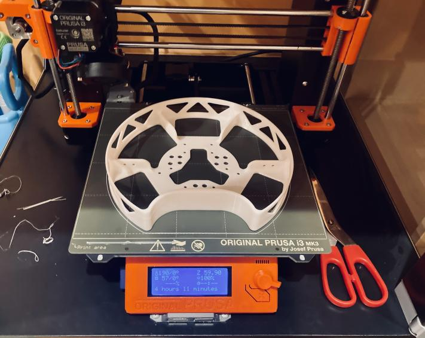
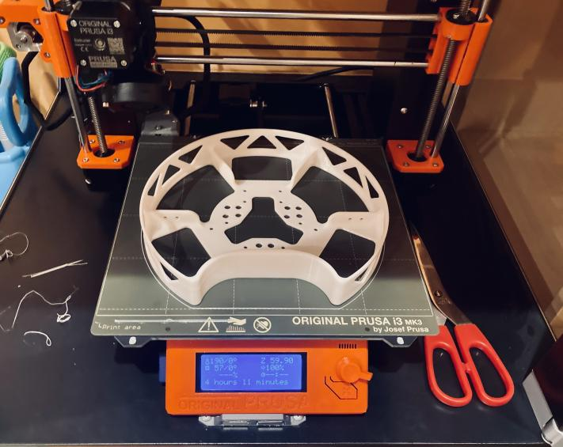
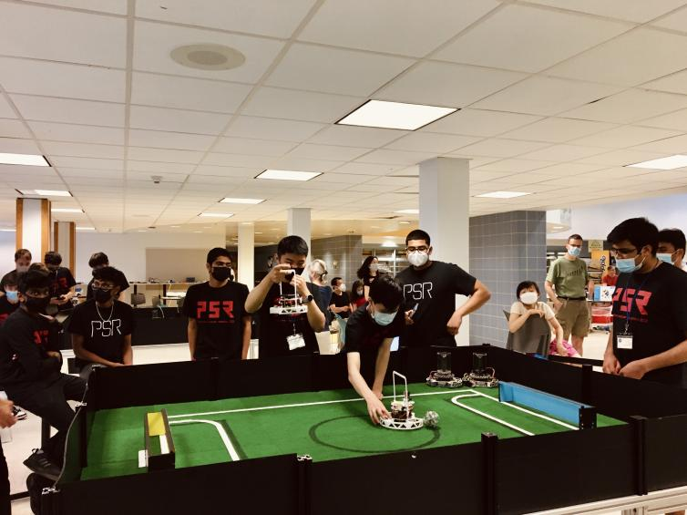
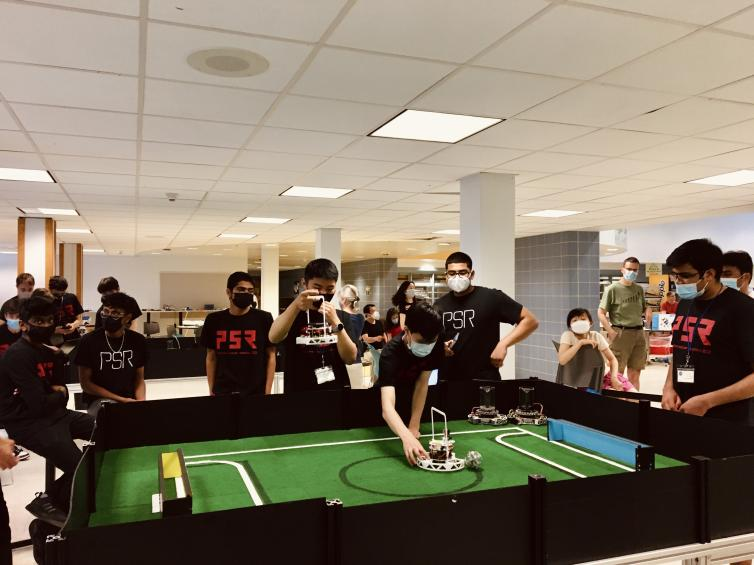

01
Overview
Team Radian is composed of four high school students with an enthusiasm for robotics. Our
team members are Jieruei Chang, Shrey Khetan, Luna Shoval, and Yangwenbo (William)
Yao; we specialize in software, vision, mechanical and electrical, respectively. This is our first
year of participating in RoboCup and we did not have much prior experience with robotics
before. We have all learned a lot this year about programming, CAD modeling, and working
with a sophisticated robotics platform.
We won second place in the US National Robocup Junior competition, as well as the Best Engineering Design award.
 Technical Paper
back to top
Technical Paper
back to top
02
Mechanical and Electrical Design
We used the CAD software Onshape to design the various 3D-printed parts on the robot,
and printed them using a Prusa i3 MK3S printer. PLA was chosen for its ease of printing;
however this means that the printed parts are not incredibly strong and are more prone to
damage.
The printed components consist of a main chassis and sensor assembly board, which are
identical between the two robots. The offense robot has an additional camera mount,
and the defense robot has a backwardfacing ultrasound mount. The printed pieces are designed
in such a way that it is simple to replace or swap components between robots if necessary.
In our robot design, we use a single main PCB to save space, resulting in a cleaner overall
design. We use a Teensy, a small but powerful microcontroller, to control the robot. Each
robot has eight infrared sensors mounted symmetrically around the exterior perimeter of the
PCB in order to determine the angle to the ball. Both robots also have three line sensors
on the underside to avoid overstepping the field boundaries. Our goalkeeper robot contains
a backward-facing ultrasonic sensor, in order to maintain a constant distance in front of the
goal. We also installed a camera on our attacking robot in order to determine the position
of the goal.
back to top
03
Game Strategy & Software
Movement
The robots use a triad of omniwheels for unconstrained lateral translation. Trigonometric equations are used to determine how quickly each of the three motors must rotate in order to move in any given direction. Rotational force can be applied simply by adding an additional constant speed to each motor.
To maintain a consistent orientation, the robot uses a gyroscope for angle correction. To avoid overshoot while simultaneously providing rapid and efficient error correction, a proportional-integral-derivative (PID) control system is used to determine the strength of the angle correction based on the magnitude of the difference between the desired and current angles.
$$u(\theta) = K_p\cdot \theta + K_i\cdot \int_{0}^{t}\theta \cdot dt + K_d\cdot \frac{d\theta}{dt}$$
where $\theta$ is the error angle and $K_p$, $K_i$ and $K_d$ are the experimentally determined proportional, integral and derivative gains respectively. The proportional term applies a corrective force that is matched by the resistive force of the derivative force (to prevent overshoot).
Ball Detection
Detection of the infrared ball is conducted through analyzing the outputs of eight IR sensors positioned equidistantly around the main circuit board. The data from each sensor can be interpreted as a vector whose direction is that of the sensor's orientation, and whose magnitude is the strength of the infrared signal received by that sensor. By taking the summation of all eight vectors, we can determine the precise direction in which the ball is located with the equations
\begin{align*}
v_x = \sum_{j=0}^{7} m_j \cdot \text{cos}\left(\frac{\pi}{4}j\right)\\
v_y = \sum_{j=0}^{7} m_j \cdot \text{sin}\left(\frac{\pi}{4}j\right)
\end{align*}
where $v_x$ and $v_y$ are the $x-$ and $y-$ coordinates of the resultant vector respectively, and $m_j$ are the magnitudes of the signal from each sensor.
Line Tracking
Line detection is done with a triad of line sensors attached to the underside of the robot. The line detection algorithm is extremely conservative as it is better to lose possession of the ball than to have the robot be removed from the field.
Currently, line detection is only run on the attacker robot, as the penalty-box lines tend to confuse the robots, and the goalie can stay inside the field boundaries relatively well using solely the readings from the ultrasonic sensor.
Goal Detection
Utilizing the OpenMV camera, the scoring goal is detected via computer vision techniques: The camera runs a threshold filter over the input image to detect all pixels within a certain (calibrated) color range. Then, it determines the locations of large patches of the color, and the coordinates of the center of the largest patch are sent to the robot via UART communication. The offense robot uses this information to decide its heading once it is in possession of the ball.
Goalie
The Goalie algorithm attempts to deflect the ball away from the goal by matching the ball's x-position. However, simply moving in the direction of the ball is inadequate as the robot will not react quickly enough if the ball has a large horizontal velocity. Therefore, the goalie calculation also takes into consideration the rate at which the ball's angle vector to the robot is changing.
To keep the goalie in front, an ultrasound sensor is used to keep a constant distance from goal. If the ultrasound detects that the robot is much farther from the goal than previously (indicating that it has crossed the threshold of the goal, it immediately moves in the reverse direction to prevent the robot from leaving the field. This is enough to stop most shots, but preventing the goalie from leaving the area directly in front of the goal allows for opponent robots to score from the sides. In the future we aim to mitigate this, perhaps with more numerous line sensors to follow the arc of the penalty box.
Development Tools
The software was primarily written in C++, with the computer vision code for the camera being written in MicroPython. Platformio was used to simplify development.
In addition, we developed a visualizer using Pygame, to facilitate debugging of the various sensors on the robot.
back to top


 

 
